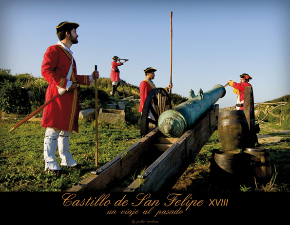
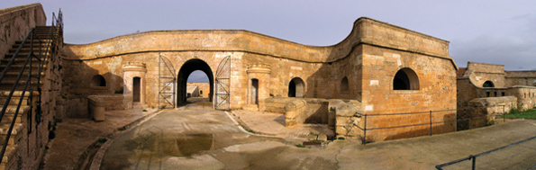

Histoire de Minorque
 De 902 à 1287, Minorque est sous la domination des Musulmans. La nouvelle population était des paysans Berbères. Nous avons hérité de leur système d’irrigation et de leurs toponymes.
De 902 à 1287, Minorque est sous la domination des Musulmans. La nouvelle population était des paysans Berbères. Nous avons hérité de leur système d’irrigation et de leurs toponymes.
Les Berbères vivaient dans des hameaux isolés, ils travaillaient la terre, spécialement dans les ravins, tirant profit de l’eau.
Ils ont construit le château de Santa Àgueda comme refuge en cas d’attaque chrétienne. La forteresse disposait d’une muraille, deux citernes et différents édifices pour résister à l’attaque.
En 1287 Alfonso III le Libéral, expulse les Berbères et Minorque redevient alors chrétienne.
En 1295, par le traité d’Anagni, Minorque est rendue à Jaume II, roi de Majorque, et oncle d’Alfonso III. Jaume II légifère la vie quotidienne des nouveaux villageois minorquins.
Le 30 août 1301, il promulgue la Carta de Franquese i Privilegis, document qui réglemente la structure sociale, politique, économique et urbanistique de l’île. Ce document est considéré par les minorquins comme une réelle constitution. Ces privilèges ainsi que les autres qui seront cédés à Minorque ont été rassemblés dans le Llibre Vermell, qui se trouve à Ciutadella.
Le deuxième grand document est le Pariatge, dicté le 19 mars 1301 par Jaume II. Il y établit la division ecclésiastique de l’île avec la fondation de sept paroisses, donnant naissance à quelques populations actuelles, avec l'objectif de repeupler l'île Minorque produira pendant des siècles, des céréales, du fromage de brebis et de la laine de grande qualité, qu’elle commercialisera à Majorque, à Barcelone et en Italie.
Les institutions locales se mettent en marche. Au XIVème siècle existe l’Université de Minorque, elle se situe à Ciutadella, ayant des compétences similaires que l’actuel Consell Insular de Minorque.
Déjà en 1439, le gouverneur Galcerán de Requesens implante le système d'élection du tirage public de charges municipales, choisies selon la classe sociale à laquelle ils appartiennent.
Ce régime municipal durera jusqu’au XIXème siècle, moment auquel s’implante l’actuel système municipaliste. Minorque dispose principalement d’agriculteurs et de quelques artisans, ayant Ciutadella comme capitale de l’île.
Entre le XVème et XVIIème siècle, Minorque souffre de l’attaque des pirates. Particulièrement cruels, les assauts de Barberousse en 1535 à Maó et l’attaque de Mustafá Pi Alí à Ciutadella en 1558 déciment la population minorquine.
Face à ces attaques, le peuple construit des tours de guets, fortifie Maó et Ciutadella, avec les châteaux de San Felipe et Sant Antoni et mobilise les troupes pour défendre l’île.
Les minorquins vivent dans une société ancrée dans la religion, marquée par un calendrier rempli de fêtes religieuses, traditionnelles, dans lesquelles les actes religieux et des corridas à cheval sont leur principal divertissement.
Les décisions politiques de l’île se prennent au sein de l’Université Générale de Minorque (à Ciutadella). Cela change lorsque les universités de Maó (1640), de Mercadal et d’Alaior (1651), prennent leur indépendance au niveau administratif. À partir de là, chaque université (mairie) récoltera et gèrera ses propres impôts.
Le paysage actuel de l’île est le fruit du travail des minorquins durant des siècles. Depuis 1287, les paysans travaillent la terre, elle leur est cédée en échange d’un impôt royal annuel; ils sont considérés comme homme de domaine ou emphytéotes.
À la fin du XVIIème siècle, les propriétaires des terres perdent leur pouvoir économique et imposent à nouveau le système de métayage. Ils produisent des céréales (essentiellement le blé) et améliorent la culture de la pomme de terre et des légumes.
Le XVIIIème siècle nous transporte dans une époque agitée. L’importance stratégique de Minorque et du port de Maó intéresse les puissances européennes. Suite à la guerre de Succession en 1713, Minorque est dominée par les Anglais. À partir de là, Minorque perd totalement le contrôle, elle passe par les mains des Anglais, des Espagnols et des Français.
Les dominations britanniques (1713-1756, 1763-1782 et 1798-1802), nous laissent un héritage singulier: des tours de défense, le château de San Felipe, le Fort Malborough, l’hôpital de l’île du roi, la citerne des Mercadal, le camí d’en Kane, le village d’Es Castell (1771) et Maó nommée capitale par le gouverneur Kane.
La domination française est brève (1756-1763), elle est marquée par la création du village Sant Lluís.
L’activité économique s’accroît grâce au commerce, à la construction navale dans le port de Maó et la présence d’un grand contingent militaire. En 1745, Es Migjorn est fondée et deux siècles plus tard en 1768, l’île verra comment 1400 minorquins émigrent en Floride.
Le XIXème siècle, est une période de contrastes. Au début, la dynamique économique reste la même que celle du siècle passé mais une législation dictée depuis Madrid empêche le libre commerce des céréales. La construction de bateaux disparaît à Maó et la production viticole chute.
Entre 1830 et 1855, l’île souffre de la grande émigration des menorquins en Algérie, impulsée par la France dans le but de consolider cette colonie. Dix mille minorquins, un quart de la population s’installent dans le nouvel Eldorado qu’est l’Algérie se voyant se transformer en une petite Minorque au nord de l’Afrique.
L’économie de Minorque connaît de meilleurs jours entre la seconde moitié du XIXème siècle et le tiers du XXème siècle.
Au milieu du XIXème siècle, la présence de la vache dans les champs minorquins se renforce et on produit davantage de fromage Mahón, un aliment qui sera reconnu dans le monde. L’exportation de chaussures de luxe augmente grâce à l’intérêt de la part du marché de Cuba et de Porto Rico, d’où l’origine des actuels maîtres cordonniers minorquins, reconnus mondialement pour leur savoir-faire et leur design.
Au début du XXème siècle Minorque, forme avec Majorque, les plus grands producteurs de porte-monnaies en argent et en or, avant-garde de la mode européenne. Des milliers de femmes contribuent à leur élaboration. Le moment de gloire terminé, le secteur se lance dans la magnifique fabrication de bijoux de l’île et de charnières, production unique dans tout le territoire. Tout au long du XXème siècle, la production du fromage, des chaussures et de la bijouterie se renforcera.
L’industrie du tourisme de façon définitive, n’arrive pas avant les années soixante, avec le début des urbanisations touristiques et la construction des premiers hôtels.
La déclaration de Minorque comme réserve de la biosphère, le 7 octobre 1993 et l’approbation du Plan Territorial Insulaire en 2003, aident à consolider l’identité de Minorque, une île qui s’engage pour la protection de son environnement. Aujourd’hui, on travaille pour que l’UNESCO déclare la culture talayotique de Minorque, Patrimoine de l’Humanité.
En témoignent, les 1.400 gisements archéologiques de l’époque talayotique, que le visiteur découvrira sur une île qui ne fait pas plus de 700 kilomètres carrés. Minorque est l’île idéale pour profiter de sa gastronomie, son artisanat et son patrimoine culturel singulier. Son histoire et ses habitants avec un territoire propice à la tranquillité, vous permettront de nous connaître et de passer un agréable séjour. Appréciez-la!